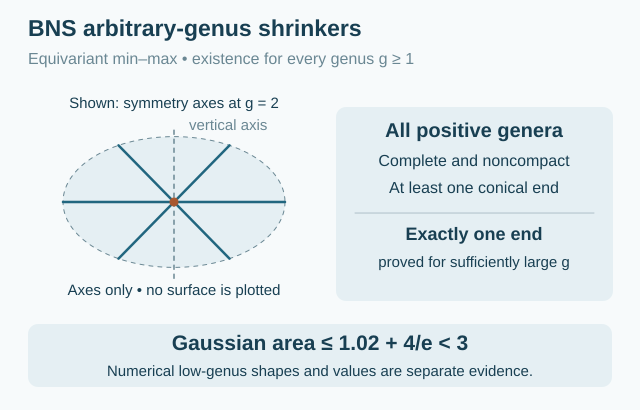

§ 2.10 Buzano–Nguyen–Schulz shrinkers of every positive genus0E02104583BA
0E02104583BA
[BNS2025], Theorems 1.2–1.3, arXiv version 2, PDF p. 2, establish this family by equivariant min-max methods. The family is discussed in [ChuSun2025], Remark 1.5.
40F2B3444C2E
For every integer $g\geq 1$ there exists a complete embedded noncompact self-shrinker $\Theta _ g\subset \mathbb R^3$ of genus $g$. The smooth flow is $\sqrt{-t}\, \Theta _ g$ for $t<0$, using $\vec H=-X^\perp /2$. There is no explicit parametrization.
These surfaces have dimension two and codimension one, are proper and boundaryless, and have a finite number of annular ends. Properness and the end topology are recorded in Corollary 2.8, PDF p. 8. They have at least one asymptotically conical end. Any additional ends are asymptotically conical or cylindrical.
The proved symmetry is invariance under the dihedral group $D_{g+1}$ of order $2(g+1)$, generated by half-turns about $g+1$ horizontal axes. The surface contains these axes and meets the vertical axis orthogonally. Additional reflection symmetry is proposed, rather than proved, in Section 2, PDF pp. 3–4.
For all sufficiently large $g$, there is exactly one asymptotically conical end. As $g\to \infty $, $\Theta _ g$ converges as a varifold to the union of the horizontal plane and $S^2(2)$, smoothly locally away from their intersection circle. Theorem 1.3 does not establish exactly one end for every small genus.
The normalized Gaussian area satisfies the proved bound
\[ 1<F_{0,1}(\Theta _ g)\leq 1.02+\frac4e<3. \]
This is Lemmas 2.5–2.6, PDF p. 7: the multiplicity is one and $F_{0,1}(\Theta _ g)$ equals the min-max width. For these normalized complete shrinkers, Gaussian area equals entropy.
The numerical simulation for $g=1$ gives Gaussian area approximately $1.7143$ (Section 4, Table 1, PDF p. 15). It is not a certified value for a uniquely identified min-max surface. The source conjectures that $\Theta _1$ has lower entropy than the Angenent torus and Gaussian Morse index five; neither statement is its existence theorem.
The relation between the large-genus members and the Kapouleas–Kleene–Møller construction is not proved to be equality. The interactive illustration is an original topology schematic informed by Section 4, Figures 3–4, PDF pp. 14–15, not a numerical solution of the shrinker equation. A vertical cutaway reveals the central sheet and lower cap. The one-ended shape at low genus reflects the paper's numerical evidence; it is not a proved end count.

Drag to rotate. Use the zoom buttons, or focus the drawing and use arrow keys and + / −.
Interactive topology schematic. Informed by Buzano–Nguyen–Schulz, Section 4, Figures 3–4; not a numerical solution of the shrinker equation. Choose a genus or use Cutaway to see the interior. Outer rims and cut edges are display boundaries. Open drawingAmbient space, topology, embeddedness and entropy
The one-end theorem is restricted to sufficiently large genus. Coincidence with the KKM construction is not proved.
Genus one · Euclidean space ℝ³ · Embedded
Ambient space
Euclidean space ℝ³
Topology
Noncompact genus-one surface with finitely many annular ends
Embeddedness
Embedded: The Buzano–Nguyen–Schulz construction gives an embedded surface for every positive genus, including all stated subfamilies.
Compactness
Noncompact
Surface genus
1
Topological ends
At least one conical end; total number not established here
Entropy
Proved bound or relation: 1 < λ ≤ 1.02 + 4/e < 3. The genus-one simulation 1.7143 is not a certified value for the constructed family.
Gaussian area
Proved bound or relation: F₀,₁ = λ for this normalized shrinker. 1 < λ ≤ 1.02 + 4/e < 3. The genus-one simulation 1.7143 is not a certified value for the constructed family.
Arbitrary positive genus · Euclidean space ℝ³ · Embedded
Ambient space
Euclidean space ℝ³
Topology
Noncompact genus-g surface with finitely many annular ends
Embeddedness
Embedded: The Buzano–Nguyen–Schulz construction gives an embedded surface for every positive genus, including all stated subfamilies.
Compactness
Noncompact
Surface genus
Every g ≥ 2
Topological ends
At least one conical end; total number not established for every g
Entropy
Proved bound or relation: 1 < λ ≤ 1.02 + 4/e < 3. The genus-one simulation 1.7143 is not a certified value for the constructed family.
Gaussian area
Proved bound or relation: F₀,₁ = λ for this normalized shrinker. 1 < λ ≤ 1.02 + 4/e < 3. The genus-one simulation 1.7143 is not a certified value for the constructed family.
Sufficiently large genus · Euclidean space ℝ³ · Embedded
Ambient space
Euclidean space ℝ³
Topology
Closed genus-g surface minus one point
Embeddedness
Embedded: The Buzano–Nguyen–Schulz construction gives an embedded surface for every positive genus, including all stated subfamilies.
Compactness
Noncompact
Surface genus
Sufficiently large genus g
Topological ends
Exactly 1 conical end
Entropy
Proved bound or relation: 1 < λ ≤ 1.02 + 4/e < 3. The genus-one simulation 1.7143 is not a certified value for the constructed family.
Gaussian area
Proved bound or relation: F₀,₁ = λ for this normalized shrinker. 1 < λ ≤ 1.02 + 4/e < 3. The genus-one simulation 1.7143 is not a certified value for the constructed family.
[BNS2025] Reto Buzano, Huy The Nguyen, and Mario B. Schulz.
Noncompact self-shrinkers for mean curvature flow with arbitrary genus.
Journal für die reine und angewandte Mathematik, 818:35–52, 2025.
Source locators refer to arXiv version 2, 5 September 2024, 18 pages.
URL: https://arxiv.org/abs/2110.06027v2, doi:10.1515/crelle-2024-0073.All uses in this project↩ 1

Comments
Comments are not enabled yet.